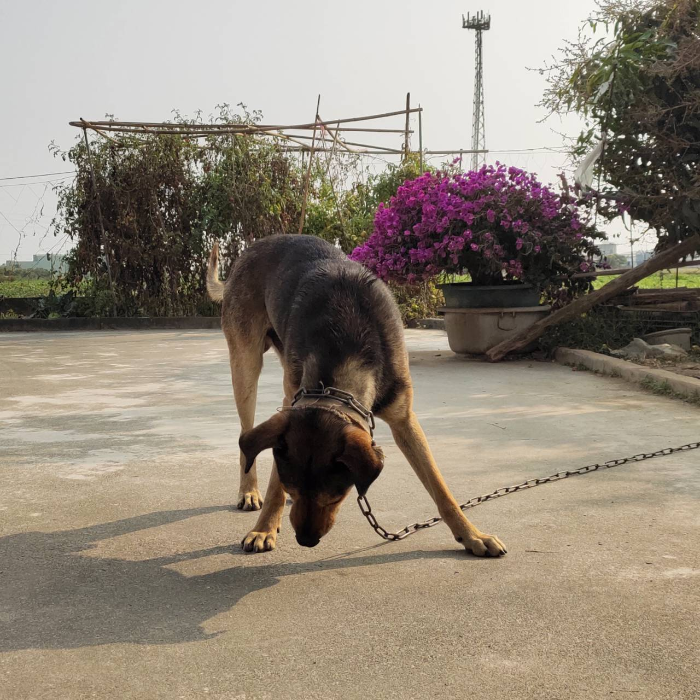
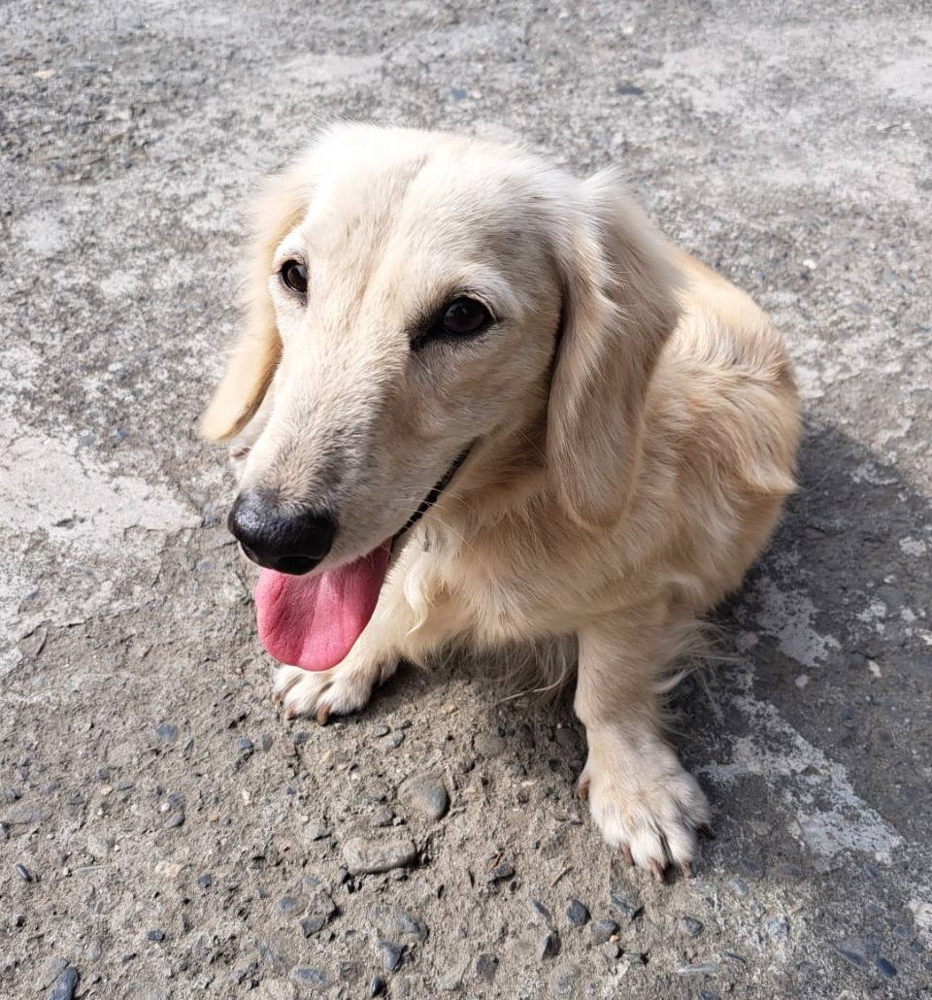
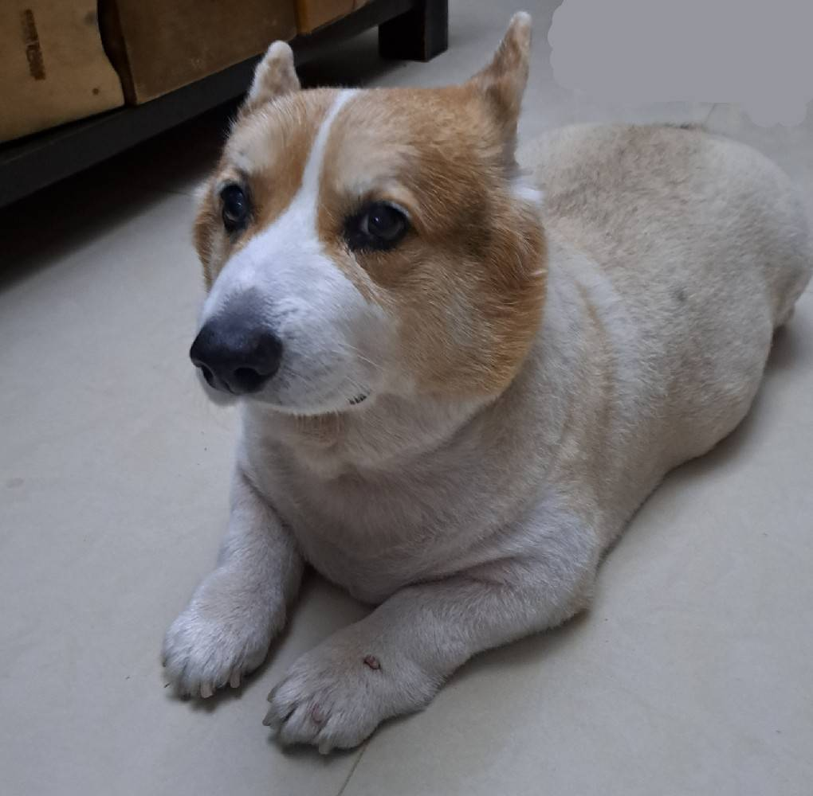

關於本站
歡迎光臨本站。 這裡是介紹我家汪的網站，有大量的可愛相片。
※未經許可，請勿擅自複製轉載。
我家的汪汪
●小黑（♂️）
來到家中長達10年的他，對任何事物都十分好奇，也很愛笑，但也十分有警惕心。
●六六（♀）
非常聽話的六六，走到哪跟到哪，也能準確接收指令，特別擅長賣萌!!!
●MOMO（♀）
年紀已高的MOMO儘管行動緩慢，但絕對不影響吃，哪裡有食物，哪裡就有她
飼主介紹

- 暱稱 ：
- yijie
- 職業 ：
- 學生
- mail ：
- evamm510@gmail.com
- web ：
- http://roka404.main.jp/blog/